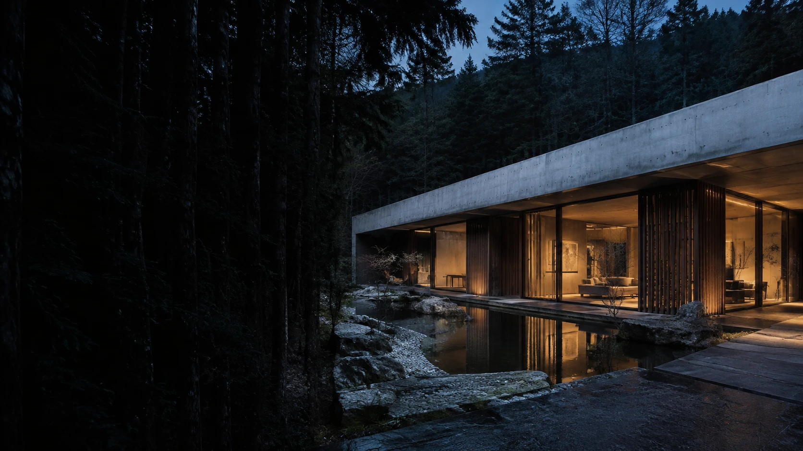

土地を読む。
光の落ちかた、風の抜けかた。
図面を引く前に、その場所に立つ。
土地が持つ豊かさを、設計の出発点に。

NOT JUST A HOUSE. A WAY OF LIFE.
何もない、ではなく。
大切なものが、息づく場所。
Less noise.
More life.
窓辺を移ろう、午後の光。
素足に伝わる、木のぬくもり。
ふと立ち止まりたくなる、庭の気配。
私たちが考えるのは、建物のかたちだけではありません。
そこで過ごす、何気ない一日の豊かさです。
一つとして、同じ暮らしはない。
だから、一つずつの答えを。
光の落ちかた、風の抜けかた。
図面を引く前に、その場所に立つ。
土地が持つ豊かさを、設計の出発点に。
木、土、石、鉄。
手にふれるものだから、実物と向き合う。
素材の素直な表情を、そのままに。
完成してから、始まる暮らし。
使うほどになじみ、愛着が深まる。
住み継ぐ日々まで、思い描く。
好きな時間、いつもの習慣、これからの暮らし。まだ言葉になっていない思いも、ゆっくり聞かせてください。土地探しの段階から、一緒に考えます。
敷地の条件や周囲の環境を確かめながら、光と風、視線の抜けを読み解きます。その場所にある手がかりから、計画の軸を見つけます。
スケッチや模型、図面を囲み、暮らしの場面を具体的にしていきます。大きな空間のつながりから、家具や照明の細部まで、対話を重ねます。
つくり手と考えを共有し、素材や納まりを一つずつ確かめます。設計した意図が空間に息づくよう、現場と図面を行き来します。
暮らしが始まってからの変化にも、目を向けて。素材の手入れや将来の使い方まで、長く付き合える建築を考えます。点検・サポートの内容はご相談時にご案内します。
「いろは」は、物事のはじまり。
新しい暮らしのはじまりに立ち会うからこそ、
描くことと、つくることを、地続きに。
住宅、小さな店舗、古い建物の改修。
それぞれの場所に、それぞれの答えを探します。
まだ、かたちになっていなくても。
土地のこと。家族のこと。いつか、の話。
あなたの思いから、家づくりを始めましょう。